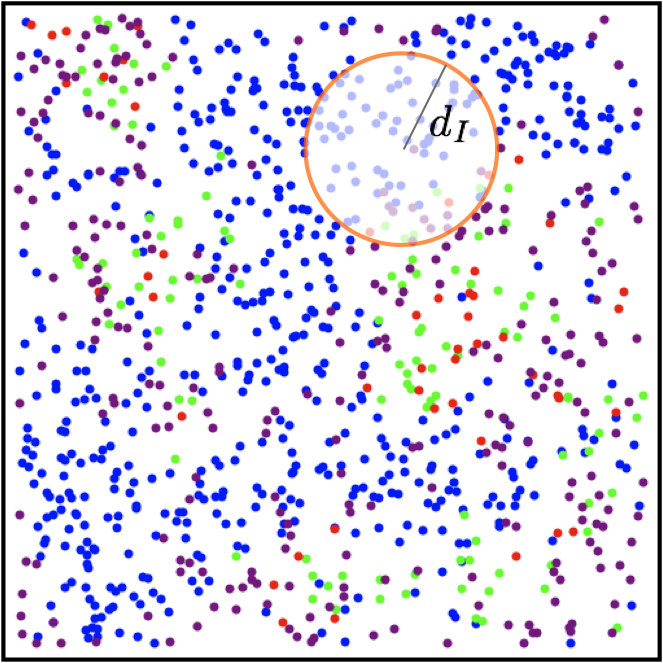
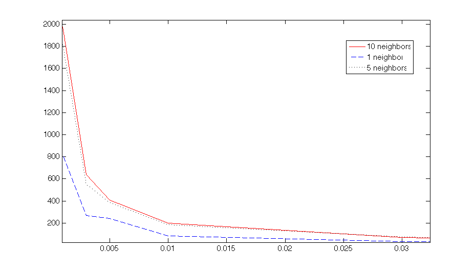
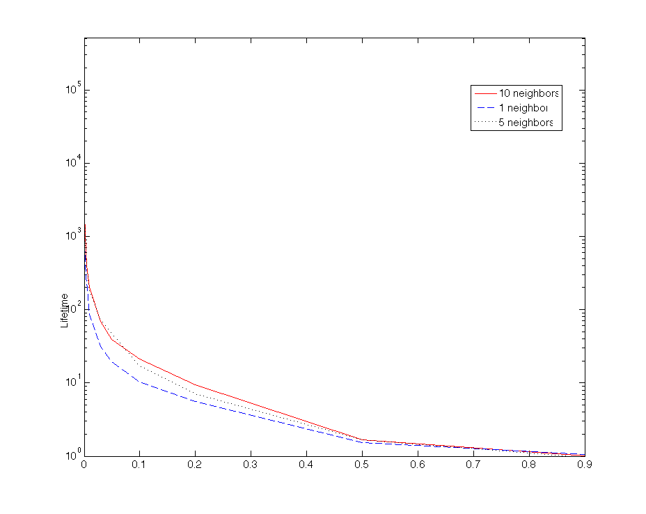
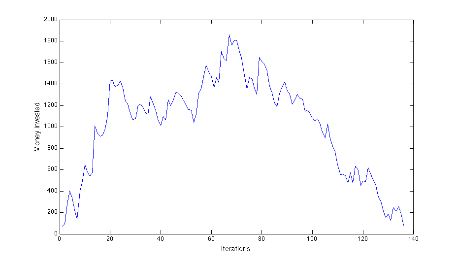

Using an agent based model of a Ponzi scheme we explore how the ratio between the rate at which new individuals are recruited into the scheme and the rate at which contracts expire and investors pull out their funds affects the lifetime of the scheme. We also investigate how the average number of neighbors an agent has affects this lifetime. We find that as the ratio of termination rate to recruitment rate increases, the lifetime of the Ponzi scheme decreases very quickly at first and then slowly. In the region where schemes have a long lifetime they are longer lived when the number of average neighbors is larger.
We assume a fixed population size and density of agents. All agents are described by their fixed coordinates on a plane, their state (either investing in the scheme or not) and the ammount of wealth which they are willing to invest (which is uniformly distributed between 0 and 100).
Once agents switch to the investing state we assign to them the time at which they will terminate their contract. We assume that at this time and only at this time, agents will pull out all of their investment and claim their interest returns. Interest rates are assumed to have a fixed value, which we have set to 50% for these simulations. In our framework, the Ponzi scheme will come to and end as soon as there are insufficient funds to fully pay the debt claimed by an investor.
We we assume that all agents participating in the scheme will actively recruit others. Thus, we assign to them the times at which they will make these recruitment attempts. Any agents targeted who are not already investors will always join the scheme. Agents recruit others within their neighborhood only. As shown in the figure below, neighborhoods have a radius d chosen so that all agents will have a given average number of neighbors.

We assume that both recruitment times and termination times are random parameters distributed exponentially throughout the population, with fixed rates.
We run simulations tuning the values of the parameters radius size and terminationRate/recruitmentRate ratio. For the first, we considered three values corresponding to different average numbers of neighbors (namely, 1, 5, and 10). For the second parameter we considered the following values: 0.001, 0.003, 0.005, 0.01, 0.03, 0.05, 0.1, 0.2, 0.5, and 0.9. Because the model is stochastic, for each parameter configuration we averaged the time to collapse of the Ponzi scheme over 40 runs. Looking at the figures below, the first thing that is worth noting is that the time to collapse is non-linearly decreasing in the terminationRate/recruitmentRate ratio. This result is rather intuitive: if we fix the average duration of contracts, then the higher the ability of the Ponzi to find people that want to invest, the higher the chances for the scheme to survive. Secondly, the size of the radius has an effect on the average time to collapse: for fixed values of the terminationRate/recruitmentRate ratio, the smaller the agent's neighborhoods, the shorter the time to collapse. This effect is larger for smaller values of the terminationRate/recruitmentRate ratio.

The figure above shows the lifetime (y axis) of the scheme corresponding to different ratios (x axis). Below we show the same plot with a logarithmic scale for lifetime.

The figure above shows a timecourse of total money invested in the Ponzi scheme (y axis) vs number of iterations.Future research could focus on many open issues that can be grouped in four main categories.